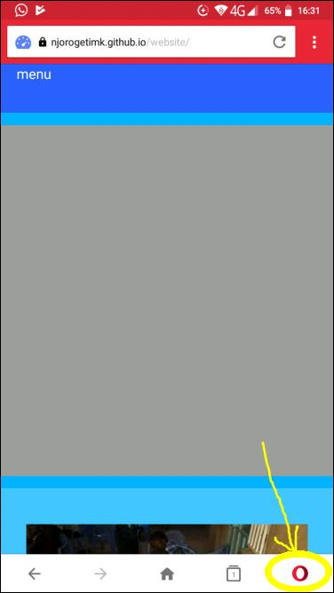
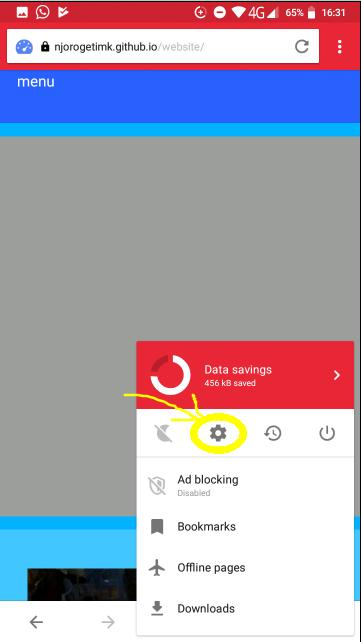
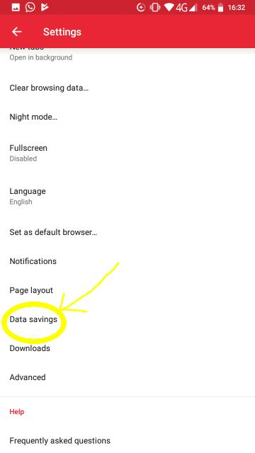
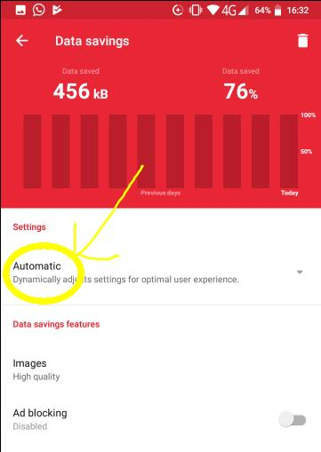
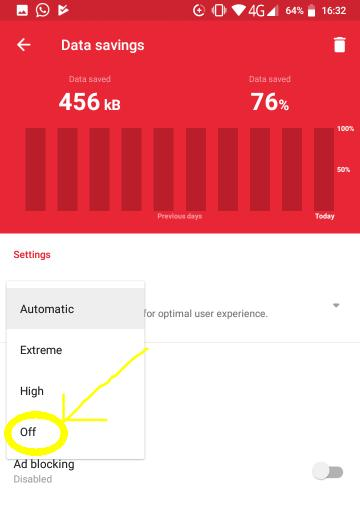
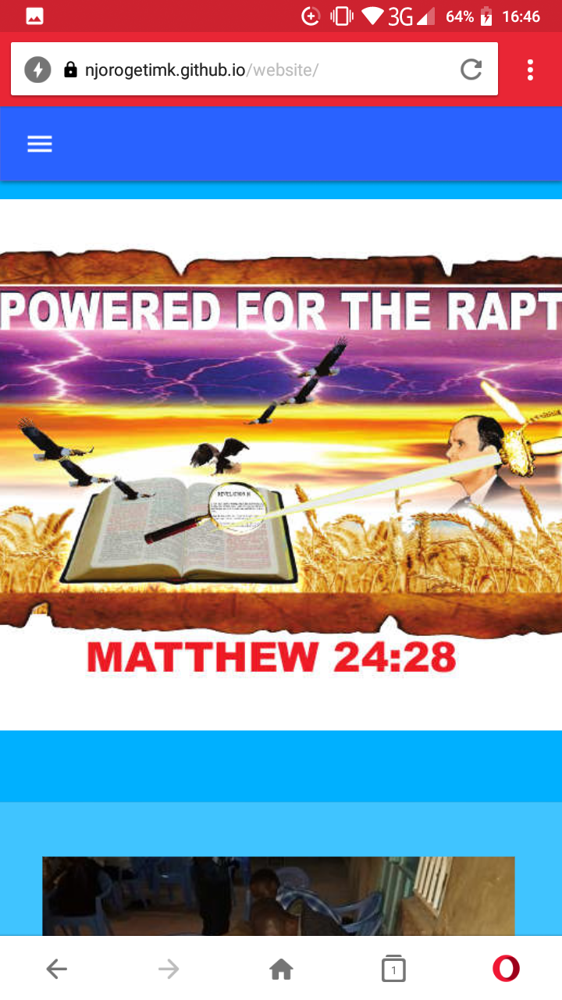

Welcome to Capstone Message Tabernacle. Our website uses JavaScript which is disabled* by your browser. If you happen to be using Opera Mini, follow the following guideline to switch off yourdata savings mode. For more enquiries contact us on: info@capstonemessage.org
1. Go to Settings
 2. Then the Data Savings menu
3. On the dropdown settings, select Off
 4. navigate back and reload
